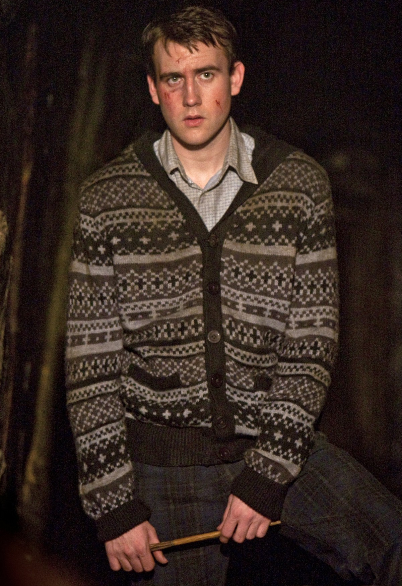
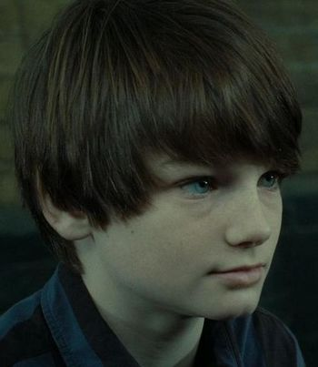

Harry Potter e as relíquias da morte', de J.K. Rowling, é o sétimo e último livro da série. Voldemorte está cada vez mais forte e Harry Potter precisa encontrar e aniquilar as Horcruxes para enfraquecer o lorde e poder enfrentá-lo. Nessa busca desenfreada, contando apenas com os amigos Rony e Hermione, Harry descobre as Relíquias da Morte, que serão úteis na batalha do bem contra o mal.

